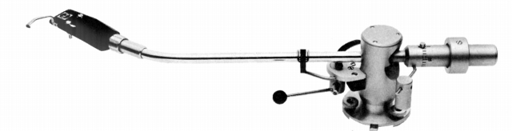
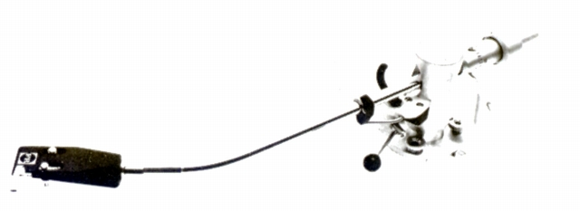
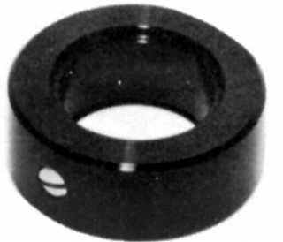
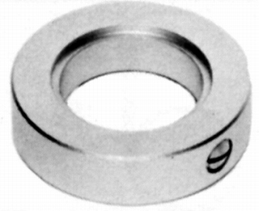
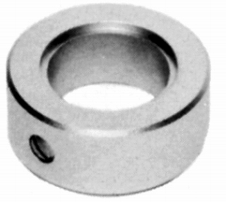

FR-24MK�U


■価格 16,000円
■型式 スタティックバランス
■全長 345�o
■実行長 245�o
■オーバー・ハング 15�o
■トラッキングエラー
■針圧範囲 0.1〜2g
0.1gステップ
■アーム高さ調整 27〜65�o
■アームベース穴 15�o
■アンチスケートディバイス あり
■アームリフター あり
■ラテラルバランサー あり
■カートリッジ自重 3〜32g
■線間容量
130pF
■発売 1967年10月
■販売終了 1980〜81年頃
■備考 価格は1970年頃のもの
1973年頃は19,000円
1975年頃は24,000円
1977年頃は31,200円
FR-24の改良モデル。
最大針圧が2gと、軽針圧用アーム。
各種オプションウェイトあり
Ｗ-10

軽量ウェイト。自重10g。1,600円
Ｗ-20

軽量ウェイト。自重20g。1,600円
Ｗ-40

標準ウェイト。自重35g。1,600円
FIDELITY-RESEARCHのインデックスへ